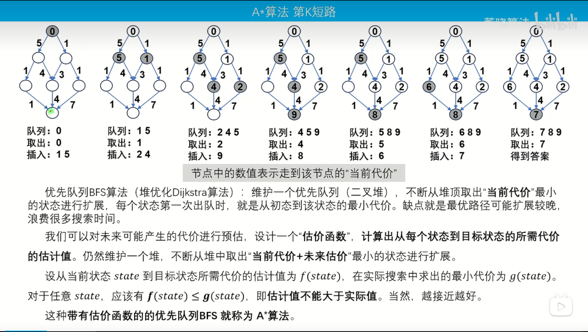
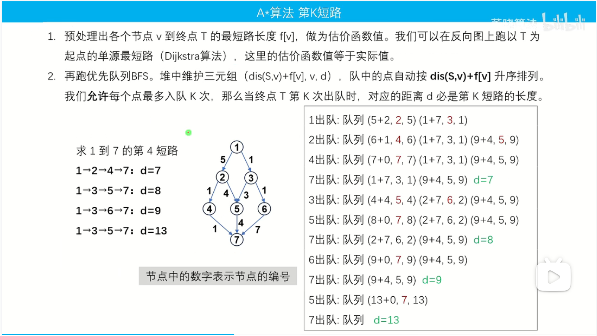

基于Dijkstra算法,求第K短路问题.
什么是A*算法

具体
优先队列BFS算法(堆优化Dikstra算法):维护一个优先队列 (二叉堆)不断从堆顶取出“当前代价”最小的状态进行扩展，每个状态第一次出队时，就是从初态到该状态的最小代价。缺点就是最优路径可能扩展较晚浪费很多搜索时间。
我们可以对未来可能产生的代价进行预估，设计一个“估价函数”，计算出从每个状态到目标状态的所需代价的估计值。仍然维护一个堆，不断从堆中取出“当前代价+未来估价"最小的状态进行扩展。
设从当前状态 state 到目标状态所需代价的估计值为 f(state)，在实际搜索中求出的最小代价为 g(state)对于任意 state，应该有 f(state) < g(state)，即估计值不能大于实际值。当然，越接近越好。
这种带有估价函数的的优先队列BFS 就称为A算法。

// #include<bits/stdc++.h>
#include<cstdio>
#include<iostream>
#include<queue>
#include<algorithm>
#include<cstring>
using namespace std;
const int N = 1010,M = 2e5 + 10;
int n,m;
int S,T,K;
int ans;
struct whp{
int s,v,d;// v 点 ，d 距离
bool operator < (const whp P)const{
return s > P.s;
}
};
int h[N],hr[N],e[M],ne[M],w[M],cnt;
void add(int hh[],int a,int b,int c){
e[cnt] = b,w[cnt] = c,ne[cnt] = hh[a],hh[a] = cnt++;
}
int f[N],vis[N],tot[N];
void dijkstra(){
memset(f,0x3f,sizeof f);
f[T] = 0;
priority_queue<pair<int,int> >q;
q.push({0,T});
while(q.size()){
//auto [sz,id] = q.top();q.pop();
pair<int,int> t= q.top();q.pop();
int sz = t.first,id = t.second;
if(vis[id])continue;vis[id] = 1;
for(int i = hr[id];~i;i = ne[i]){
int j = e[i];
if(f[j] > f[id] + w[i]){
f[j] = f[id] + w[i];//gu jia han shu反向距离
q.push({-f[j],j});
}
}
}
}
int astart(){
priority_queue<whp>q;
whp a = {f[S],S,0};
q.push(a);
while(q.size()){
//auto [s,u,d] = q.top();q.pop();
whp t= q.top();q.pop();
int s = t.s,u = t.v,d = t.d;
tot[u]++;
if(tot[T] == K)return d;
for(int i = h[u];~i;i = ne[i]){
int j = e[i];
if(tot[j] < K){
whp a = {f[j] + d + w[i],j,d + w[i]};
q.push(a);
}
}
}
return -1;
}
int main(){
memset(h,-1,sizeof h);
memset(hr,-1,sizeof hr);
scanf("%d%d",&n,&m);
for(int i = 1; i <= m;i++){
int a,b,c;
scanf("%d%d%d",&a,&b,&c);
add(h,a,b,c);add(hr,b,a,c);
}
scanf("%d%d%d",&S,&T,&K);
if(S == T)K++;
dijkstra();
printf("%d",astart());
return 0;
}